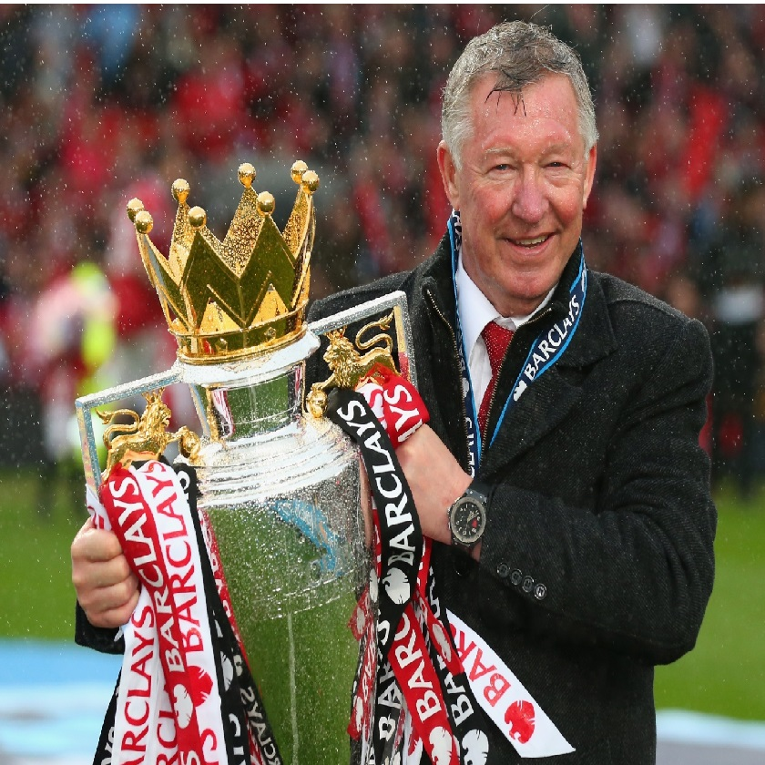
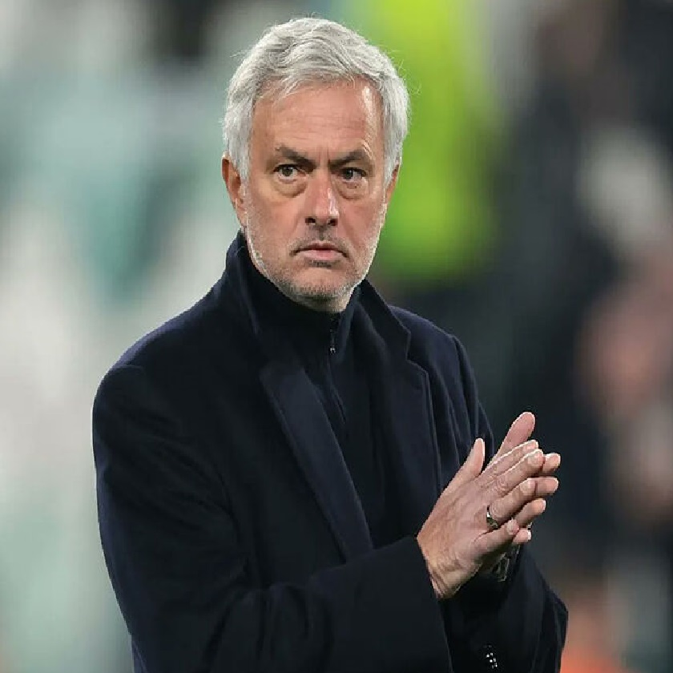
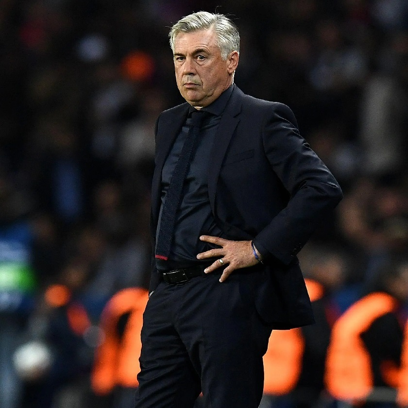
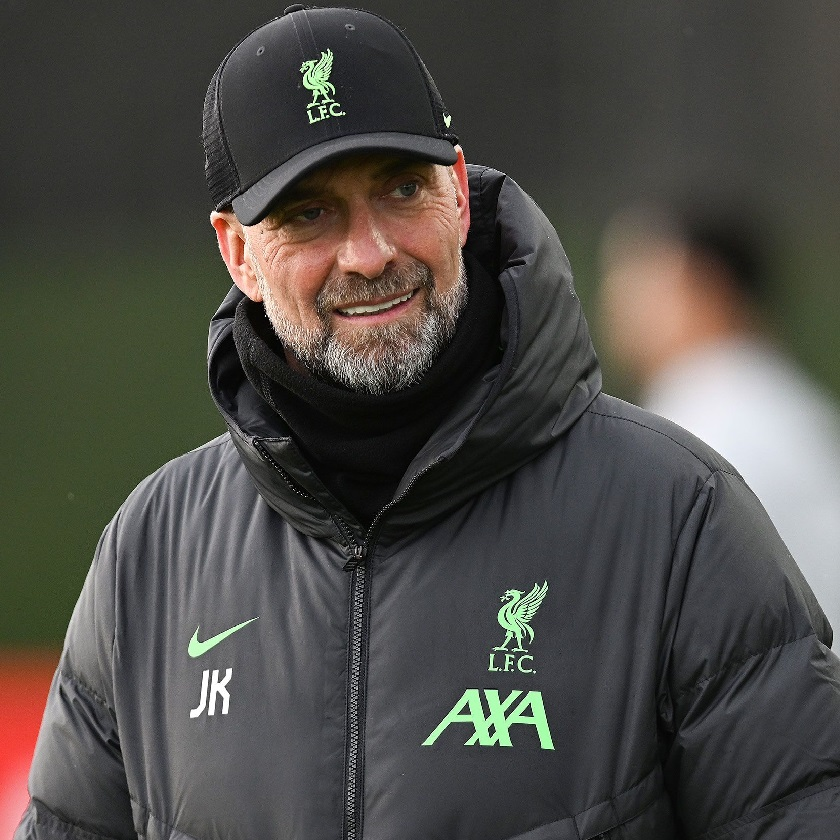

Mejores Entrenadores
Esta sección está dedicada a los entrenadores que han dejado una marca indeleble en la historia del fútbol. Aquí encontrarás información sobre sus estrategias, logros y el impacto que han tenido en sus equipos y el deporte en general.
Sir Alex Ferguson
Uno de los entrenadores más exitosos de la historia, Sir Alex Ferguson dirigió al Manchester United durante más de 26 años, ganando numerosos títulos de liga y la Champions League. Es conocido por su habilidad para motivar a los jugadores y su longevidad en el cargo.
José Mourinho
Conocido como "The Special One", José Mourinho ha ganado títulos en múltiples ligas europeas, incluyendo la Premier League, La Liga y la Serie A. Es famoso por su estrategia defensiva y su capacidad para obtener resultados con diferentes equipos.
Carlo Ancelotti
Carlo Ancelotti ha ganado la Champions League con varios clubes, incluyendo el AC Milan y el Real Madrid. Su estilo táctico y su capacidad para adaptarse a diferentes ligas lo han convertido en uno de los entrenadores más respetados en el fútbol mundial.
Jürgen Klopp
Conocido por su estilo de juego "gegenpressing", Jürgen Klopp ha llevado al Liverpool a ganar la Champions League y la Premier League. Su energía y pasión en el banquillo han inspirado a muchos jugadores y aficionados.
© 2024 Andre - Clase de Desarrollo Web